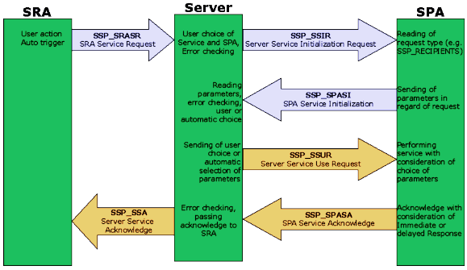

The purpose of the System Services Protocol (SSP) is described in 'What is SSP?'
Planning phase
Idea: Joakim Högberg
Server Code and this Specification: Olaf Piesche
CCurrently involved in specification, planning and future first implementations:
Joakim Högberg (AtarICQ)
Lonny Pursell (AtarIRC)
Olaf Piesche(Smurf)
Odd Skancke (TextView)
Jo Even Skarstein (TaskBar)
Ralph Lowinski (GuiTar)
Rafal Kawecki (WAP-Browser, ArchView)
Dan Ackermann (mICQ, AtarICQ-Overlay)
Jan Krivanek (Atack) (aMail, aFTP)
Erik Häll (MyMail)
Martin Elsässer (ACSPro)
Denis Huguet FalcAmp
Emailed people (got the spec, waiting for reply):
Joachim Fornallaz (GEMSetup)
News
UPDATED to V0.9: Nov. 17th, 2000 (see changes!)
Dec. 9th, 4:39pm
Martin Elsässer has announced interest to implement SSP in
ACSPro. That means that all applications constructed with ACSPro could
support basic SSP functionality from the start!
Nov. 17th, 1:46pm
AES message definitions added. Basically the protocol is ready.
Just decided that the Server will feature 2 different debug modes. Because it will take a short while until we have implemented the protocol, it might be difficult to find out if the protocol is implemented correctly in terms of how SPAs and SRAs react to different messages. The standard debug mode will feature output and logging of incoming and sent messages and their parameters, but this doesn't show the reaction of SPAs and SRAs to different messages, if the protocol implementation in these applications is not finished. This will be solved by the Server providing an extended debug mode in which it can simulate both SRAs and SPAs, additionally to the logging.
SPA programers: you'll get a dialog window in which you can send different service requests directly from the Server, as if another application requested a service (SRA simulation).
SRA programmers: You'll have display in the same dialog window showing different requests coming in, and the Server will simulate being an SPA and sending back acknowledgement (SPA simulation) including simulation of Service Initialization and DRS delays.
The debug modes will not be available in the first official release version, to keep the Server code small and efficient.
About this spec
Welcome to the online SSP specs ;)
I want to ask everybody involved to tell me if you send the specs to somebody else, so that we can keep track of things and I can send updates to everybody.
Target for V1.0 is an as complete as possible spec of Send File, Display Message, Send Message, Status Display, Context Popup, Compress File and Display Information Services.
These are the services that will be primarily used by the currently involved applications.
Changes to the spec will be listed on the 'SSP changes' page.
Everybody involved is encouraged to come up with suggestions, improvement, criticism and anything else you can come up with. There are 2 reasons for not specifying SSP alone and releasing it then. One is, this way we have a broad base of applications supporting the protocol at release time already, which will increase the acceptance of it on the side of the users, and hence also on the side of developers. The other reason, just as, if not more important, is that this way not only ideas of one or two persons flow into the project, but of a variety of developers working on all different kinds of software. That'll make SSP more versatile and flexible and make it take several different points of view into account. Read SSP changes for everything else ;)
Specification changes as of Nov. 17th, 2000
Updated spec version number to V0.9
Little tweaks here and there
Added constant definitions for the AES messages. SSP
reserves messages from 4719 to 4749 (currently using the first 6) for
future use. With this, the protocol is practically ready for
implementation!
Update to 1.0 will be done as soon as I start implementing the
server (in about a week I hope), and if no more suggestions for
changes are made.
Specification changes as of Nov. 9th, 2000
Updated spec version number to V0.85
Added instructions on how to implement SSP as a SPA and SRA,
including some short sample code.
Specification changes as of Nov. 7th, 2000
updated spec version number to V0.8
Added the first constant definitions including a short explanation of the
determintation of services on Server side as reaction to SSP_SRASR and
its data identification.
Updated the services with necessary value of dataID for using
specific services.
Specification changes as of Nov. 6th, 2000
Updated spec version number to V0.77
Added spec of server registration
Updated Status Display Service with possibility to remove the
status icon (e.g. when exiting the SRA). Shame, I didn't think of that
when I specified it...
Added message directions in the message
descriptionsServer", to make more clear who sends which message,
and where to
Specification changes as of Nov. 4th, 2000
Updated spec version to 0.75
Added what is SSP? section as an introduction.
Changed Timeouts and Errors - the pipeline scheme showed me
something I didn't see before (that's pretty sad...): the SRA can't
know if services are Immediate or Delayed Response. Hence, timeouts
will have to be handeled completely by the server. This shows how good
it is to have a thorough plan before implementing something like
this...
Added SSP message pipeline scheme to make the way it works more
transparent ;)
Changed Context Popup Service spec to including mouse
parameters into the SSP_SRASR and SSP_SSIR messages
Added Information Display Service in conjunction with Status Display Service. SPAs
providing Status Display should also be able to request Information
Display. Updated the Software list concerning this.
Specification changes as of Nov. 3rd, 2000
Introduced this website and wrote some new stuff into 'about
this spec' on the mainpage
Added no-write-rule to general rules concerning shared memory
handling
Added list of prospective SSP implementing software with
possible services for each of the apps
SSP_SRASR: changed and updated data type spec for SRA service
request
Added handling of folder names to the send file, upload file
and compress file service specs in Services, SSP_SENDFILE,
SSP_UPLOADFILE, and SSP_COMPRESSFILE, see the service implementation
notes.
Decided to implement SSP into a text editor shared/static
library under development by Olaf, added the lib to implementing
software list
Moved Jo Even, Odd and Ralph to the involved developers list ;)
SSP is an approach to make functionality of different applications useable throughout the whole system. All applications are targeted, although networking applications will probably benefit most quickly. SSP is a Client-Server architecture. The SSP-Server (background application) has globally registered applications providing different services (service providing applications or SPAs). Service Requesting Applications (SRAs) can use the SPA's services for their own documents.
Example:
Possible services and registered applications are held in different configuration files on the Server side. When new applications want to be registered, it can be done at the first communication between the SSP-Server and the application, or pre-use, by the application installer or config program. The first possibility is for convenience to the user, because simply copying and using a new version of a program would not corrupt the registration with the SSP-Server, since the application would register itself with the Server at startup. Registering with the SSP-Server consists of a short communication in which the program path and name of the SPA and the provided services are sent to the Server. The Server could runtime (when services are requested by the SRA) check for the existence of registered SPAs, which will prevent errors upon service initialization.
What is the SSP-Server?
The SSP-Server is an application running in the background that manages all communication between SRAs and SPAs. All services are hardwired into the Server. This system has been chosen for several reasons:
The Server can perform error checking, correction and
prevention, which takes workload off the developers of implementing
SPAs and SRAs
The Server can perform user interaction (choice of service,
choice of SPA, user parameter input) without the SPAs and SRAs having
to hassle with it.
Appearance of the user interactive parts (popups, dialogs for
parameter input, etc.) is consistent
Hardwiring the services prevents messy implementation and
introduction of new services
The Server can combine different services into one, for example
Compress File Service and Send File or Upload File Service to Compress
and Send or Compress and Upload, without the SRAs and the SPAs having
to know about it.
The protocol can be extended in many cases (e.g. with global
contacts, see 5.) without interfering with any previous
implementations and specifications.
The Server may install a cookie to indicate its presence. This might make it possible to have the Server run without menu_register, which would keep it more or less completely invisible to the user. This will prevent accidental termination of the Server (by [Control]-clicking on its desk-menu entry) and make it work more as an integral part of the system.
The SPAs have to register with the Server. Currently, the best way to do this seems to be at 2 different points:
a. At the SPA's first time installation
b. At every startup of the SPA
b is for convenience and reliability reasons. Sending a small registration information block to the Server at any SPA startup makes it possible, for example, to simply copy a new version of an SPA over an old one. If the new version supports new services, the Server will find out about this on the SPA's startup and can automatically update its configuration files, without the user having to mess with anything.
The user will have the possibility to switch single SPAs for certain services on and off, for example for the Status Display Service (see sspServices.txt). Registration protocol still has to be specified.
Messages are currently undefined. Free AES message numbers have to be found and the SSP messages defined.
Service Requesting Application Service Request
#define SSP_SRASR 0x126F SRA -> Server AES message-buffer: [0] = SSP_SRASR [1] = appl_id - Application ID of SRA [2][3] = (long)dataLen - LONG that gives length of data in the shm-block [4] = dataID - Data identification (SSP_TEXT, SSP_FILENAME ...) [5] = shmID - ID number for shared memory file Filename for shm-file is u:/shm/[applid]_data[id].ssp For example, if Smurf has appl_id 25, is sending a file and chose id 0: u:/shm/25_data0.ssp
| SSP_COMPRESSFILE: | Complete Filepath, including name and extension
|
| SSP_SENDFILE: | Complete Filepath, including name and extension
|
| SSP_UPLOADFILE: | Complete Filepath, including name and extension
|
| SSP_SENDMSG: | Complete text message to be sent
|
Server Service Initialization Request
#define SSP_SSIR 0x1270 Server -> SPA AES message-buffer: [0] = SSP_SSIR [1] = requestID - ID of Server request (SSP_RECIPIENTS, SSP_COMPRESSFORMAT...) [2] = sessionID - ID of SSP session Filename for shm-file is u:/shm/[applID]_init[sessionID].ssp
Service Providing Application Service Initialization
#define SSP_SPASI 0x1271 SPA -> Server AES message-buffer: [0] = SSP_SPASI [1] = sessionID - ID of SSP session as given in SSP_SSIR
Server Service Use Request
#define SSP_SSUR 0x1272 Server -> SPA AES message-buffer: [0] = SSP_SSUR [1] = serviceID - ID of service (e.g. SSP_SENDFILE) [2] = sessionID - ID of SSP session as given in SSP_SSIR [3][4] = (long)initID - ID of picked initialization datum [5] = shmID1 - ID 1 for shm-block [5] = shmID2 - ID 2 for shm-block [7] = sspPar1 [8] = sspPar2
| SSP_COMPRESSFILE: | Complete filepath, including name and extension
|
| SSP_SENDFILE: | Complete filepath, including name and extension
|
| SSP_UPLOADFILE: | Complete filepath, including name and extension
|
| SSP_SENDMSG: | Complete text message to be sent
|
Service Providing Application Service Acknowledge
#define SSP_SPASA 0x1273 SPA -> Server AES message-buffer: [0] = SSP_SPASA [1] = sessionID - ID of SSP session as given in SSP_SSIR
Server Service Acknowledge
#define SSP_SSA 0x1274 Server -> SRA AES message-buffer: [0] = SSP_SSA [1] = dataID - ID of data shm file as given in SSP_SRASR
The services are not directly requested by the SRA, but determined by the Server, from the data identification provided by the SRA in messagebuf[4] when sending SSP_SRASR.
SSP_SENDFILE - Send File Service
Interactive IRS
Used to make a networking application send a file to a
destination (user).
Upon sending of the SSP_SRASR message from the SRA to the
Server, the shared memory block will contain a NULL-terminated filename for
the file to be sent. dataID has to be SSP_FILENAME.
The Server will request SSP_RECIPIENTS from the SPA with
SSP_SSIR. The SPA then has to provide a shared memory block that
contains a list of possible recipients separated by CRLF terminated by
NULL with the SSP_SPASI message. The Server will open a list of the
recipients for the user to choose from.
The SPA will then receive a SSP_SSUR message containing the
number of the recipient from the list in ssp_par1
(messagebuf[6]). The shared memory block will contain the NULL-
terminated filename of the file to be sent.
The SPA concludingly has to send SSP_SPASA to the Server, to
close the session.
The Server will send SSP_SSA to the SRA, indicating the service
is in progress and the shared memory file can be closed and deleted by
the SRA.
Notes:
Synchronization of the global contacts and the local contacts of
the SPA can be done at this point.
Folders: if a directory name instead of a filename is passed, the
SPA should try to send the complete file folder, including all
subdirectories and all files inside.
SSP_STATUSDISPLAY - Status Display Service
Invisible IRS
Used to make any application (preferably those with permanent
screen displays, for example TaskBar or MultiStrip or any Desktop)
display status icons of other applications. Also see the Context Popup
Service, which applications providing this service should implement to
be able to request a popup menu in context to the current status from
the SDS requesting app.
Upon sending of the SSP_SRASR message, the SRA's shared memory block
will contain icon data.
A dataLen (messagebuf[2]/[3]) value of 0 (zero)
removes the icon from the status display. This has to be done before
exiting the SPA!
dataID has to be SSP_STATUSICON.
The Server will send SSP_SSIR with SSP_SDS as requestID,
indicating use of the Status Display Service with the application id
of the SRA in msgbuf[6] for distinguishing different SRAs on the SPAs
side (e.g. to maintain consistent status icon positions in the
display).
SSP_SSIR will be sent to all registered SPAs providing this
service, that are switched on for SDS by the user. If
requestID (messagebuf[1]) is SSP_ENDSDS, the SPA has to remove
the icon referring to the status of the application with the
appl_id sent.
The SPA will answer with SSP_SPASI without any further
parameters.
The Server will then send SSP_SSUR containing the application ID
of the SRA in msgbuf[6]. The shared memory file will contain the icon data
(16x16) to display. If requestID in SSP_SSIR was SSP_ENDSDS,
the shm-block contains no data! The SPA has then to remove the status
icon of the SRA.
The SPA will answer with SSP_SPASA
The Server will send SSP_SSA to the SRA, to indicate the status
display has been updated, and the shm-file can be deleted.
Notes:
Upon registration of the SPAs with the Server, the Server will
check if any not formerly registered apps providing the Status Display
Service have registered. If so, a list of these SPAs will be presented
to the user, with the possibility to turn the status display for
single applications on and off. This makes it possible for the user to
choose where the status icons are to be displayed. SPAs that are
switched off for status display will not receive SSP_SSIR messages
from the Server.
SSP_DISPLAYMESSAGE - Display Message Service
Invisible IRS
Used to make an application display a text message from another
application in one of their own windows. For example, messages
received in iconified aICQ windows can be sent to be displayed in
visible aIRC windows and vice versa.
Upon sending of SSP_SRASR by the SRA, the shared memory block will
contain the text to display. dataID has to be SSP_TEXT.
The Server will send SSP_SSIR with the application ID of the SRA
in msgbuf[6] to the SPA
The SPA will answer with SSP_SPASI
The Server will send SSP_SSUR containing the application ID of
the SRA in msgbuf[6]. The shared memory block will contain the text to
display.
The SPA will display the text and answer with SSP_SPASA. It is
up to the SPA to choose one or more of its windows to display the text
in.
The Server will send SSP_SSA to the SRA.
Notes:
Other than with the send message service, the text message is only
to be displayed by the SPA, not sent over network connections
to other users.
SSP_SENDMESSAGE - Send Message Service
Interactive IRS
Used to make a (network) application post a message from another
application in one of their own windows to a certain destination. For
example, a text block selected in an editor can be sent to an online
user in aICQ or to a channel or chat in aIRC, or as an email by any
email client.
Upon sending of SSP_SRASR by the SRA, the shared memory block will
contain the text to post. dataID has to be SSP_TEXT.
The Server will send SSP_SSIR requesting SSP_RECIPIENTS to the
SPA.
The SPA will answer with SSP_SPASI providing a list of possible
destinations in shared memory (e.g. online users in aICQ or open
channels/chats in aIRC) separated by CRLF terminated by NULL. The
Server will open a list with possible destinations for the user to
choose from.
The SPA will then receive a SSP_SSUR message containing the
number of the recipient from the list in ssp_par1
(messagebuf[6]). The shared memory block will contain a NULL-
terminated string that is the message to send.
The SPA will post the text to the chosen destination and answer
with SSP_SPASA.
The Server will send SSP_SSA to the SRA.
Notes:
Synchronization of global and local contacts can be done at this
point. The Server might be able to determine if the recipients are
email addresses (maybe by the SPAs registration information) and
provide a possibility to type in a new recipient for the user.
SSP_UPLOADFILE - Upload File Service
Interactive IRS
Used to make a networking application (ftp client or similar)
upload a file to a destination (Server/directory).
Upon sending of the SSP_SRASR message from the SRA to the
Server, the shared memory block will contain a NULL-terminated filename for
the file to be uploaded. dataID has to be SSP_FILENAME.
The Server will request SSP_RECIPIENTS from the SPA with
SSP_SSIR. The SPA then has to provide a shared memory block that
contains a list of possible destination Servers (from the favorites)
and a list of directories (from the favorites) with the SSP_SPASI
message:
server|user|pass|directory|directory[CRLF]
server|user|pass|directory|directory|directory[CRLF]
server|user|pass|directory[NULL]
The Server will open a list of the destination Servers and
directories for the user to choose from, and/or provide a text edit
field for typing in Server, directory and login/password.
The SPA will then receive a SSP_SSUR message, the shared memory
block will contain the NULL-terminated filename of the file to be sent
followed by the NULL-terminated Server name, NULL- terminated
directory.
The SPA concludingly has to send SSP_SPASA to the Server, to
close the session. The Server will send SSP_SSA to the SRA, indicating
the service is in progress and the shared memory file can be closed
and deleted by the SRA.
Notes:
The ftp servers, directories and user/pass combinations will be
held in global contacts as well, at some point. The SPA will still
send the local favorites, and the global contacts can be synchronized
with the local contacts by the Server at this point. Newly entered
contacts can be integrated into the global contacts.
Folders: if a directory name instead of a filename is passed,
the SPA should try to upload the complete file folder, including all
subdirectories and all files inside.
SSP_COMPRESSFILE - Compress File Service Interactive
DRS
Used to make an archiver application compress a file
Upon sending of the SSP_SRASR message from the SRA to the
Server, the shared memory block will contain a NULL-terminated filename for
the file to be compressed. dataID has to be SSP_FILENAME.
The Server will request SSP_FORMATS from the SPA with SSP_SSIR.
The SPA then has to provide a shared memory block that contains a list
of possible compression formats (for TwoInOne e.g. LZH and ZIP, GuiTar
TAR, GZ, TGZ) with a SSP_SPASI message. The Server will open a list of
the formats for the user to choose from. The SPA can also provide one
format in different versions, e.g. for compression levels ZIP low,
medium and high compression.
The SPA will then receive a SSP_SSUR message containing the
number of the format from the list in ssp_par1
(messagebuf[6]). The shared memory block [shmID]_data.ssp will contain
the NULL- terminated filename of the file to be sent. Additionally,
the destination directory and filename for the archive will be
provided in a shm-block with the name [archiver-
appl_id]cmpname[sessionID].ssp, for example 25cmpname0.ssp, if the
archiver has appl_id 25.
After finishing (!!) compression of the file, the SPA will send
SSP_SPASA.
The Server will send SSP_SSA to the SRA, indicating the finished
compression of the file.
Notes:
This service is a DRS, the acknowledge message is sent by the SPA
after finished compression of the file. This is because this service
can be combined with others (Send file or Upload file), so the archive
file might have to be used for the second service.
Folders: if a directory name instead of a filename is passed,
the SPA should try to compress the complete file folder, including all
subdirectories and all files inside, incorpoating the directory
structure of the compression source into the compressed archive.
SSP_CONTEXT - Context Popup Service Interactive IRS
Used to make an app display a context menu in context of the
current status displayed with the Status Display Service at a certain
position on screen, and react on the user's choice from the popup.
This service will be requested by the application that
provides the Status Display Service SPA will in this case also be SRA
and SRA also SPA.
Upon sending of the SSP_SRASR message from the SRA (the SDS
providing application) to the Server, there will be no shared memory
block. dataID has to be SSP_CONTEXT. messagebuf[6] and [7] have to
contain the X- and Y-position of the mouse click, messagebuf[8] the
mouse button vector as returned from evnt_button or evnt_multi.
messagebuf[9] has to contain the application ID of the application
that the status icon refers to. The appl_id for every icon is
sent with the Status Display Service. dataID has to be
SSP_CONTEXTREQUEST.
The Server will request SSP_POPUP from the SPA with SSP_SSIR.
The SPA has to answer with an SSP_SPASI message. No parameters
(except requestID and sessionID) will be of any
meaning in either of the messages.
The SPA will then receive a SSP_SSUR message containing the X-
position of the mouse click in messagebuf[6] and the Y-position in
messagebuf[7]. Both coordinates are screen coordinates with 0/0 in the
upper left corner. messagebuf[8] will contain the mouse button vector,
stating which button(s) have been pressed, as usually returned by the
AES evnt_xx functions. The SPA will then display its context popup,
preferably in context to the current status displayed with the Status
Display Service.
After the user has chosen a popup entry, the SPA will send
SSP_SPASA.
The SRA (the Status Display Service providing application) will
receive SSP_SSA.
Notes:
When receiving the SSP_SSIR message, the application providing the
CPS (and hence requesting SDS) service, should open the context popup
as quickly as possible, to provide responsivity and reasonable user
feedback.
The context popup should be in context to the current status
display, for example if aICQs context popup is opened, one menu entry
for connecting or disconnecting to an ICQ Server should be used,
saying 'Connect' if aICQ is disconnected, and 'Disconnect' if it is
already connected. Other possibilities would be to provide the other
user status modes (Online, Invisible, Do not disturb, etc.) in the
context popup for quick access, or an entry 'bring to top', that tops
all aICQ windows. Since the context popup is actually displayed and
handled by the application that uses the SDS, submenus and
hierarchical popups are possible and encouraged. Try to keep it
functional and easy to use, without overloading the context menus with
options. The application does not need to be fully operateable only by
the context menu, it's rather a way to make options that are
status-dependent or are frequently used accessible quickly and easily.
SSP_DISPLAYINFO - Display Information Service Interactive
IRS
Used to make an app send information (will mostly be used in
context of the current status displayed with the Status Display
Service) in the form of ASCII text. Can be used, for example, if a
BubbleGEM event on a Status Icon occurs in TaskBar, to make the
application requesting the status display send extended information
about the current status for TaskBar to display.
This service will probably most commonly be requested by the
application that provides the Status Display Service SPA will in this
case also be SRA and SRA also SPA.
Another possibility would be PS-Control-like applications, that
show system information about running processes (CPU and memory usage,
etc.). These could then also display information about the
application's current status. N.AES could use this service to display
the current status of the applications when switching apps with
[Alternate]+[Tab].
Upon sending of the SSP_SRASR message from the SRA (the SDS
providing application) to the Server, the shared memory block has to be a
buffer with space for the maximum size of displayable information and
read and write access rights.
dataID has to be SSP_INFOBUF.
The Server will request SSP_INFO from the SPA with SSP_SSIR.
The SPA is to prepare the information to display (consider current
status).
The SPA has to answer with an SSP_SPASI message. No params
(except requestID, sessionID) have any meaning.
The SPA will then receive a SSP_SSUR message.
messagebuf[7] will contain the maximum length of
information. The SPA is then to copy the information to display
into the existing shared memory block provided with SSP_SSIR. The
SPA doesn't need to create its own shm-block.
The SPA will send SSP_SPASA after copying the string to shm
and freeing temporary memory.
The SRA (e.g. the Status Display Service providing application)
will receive SSP_SSA. This indicates that the information is now in
the shared memory file provided at SSP_SRASR and can be displayed, and
the shm-file deleted.
Notes:
Careful with the shared memory on this one! The SRA has to
create the shared memory file as read/write! Otherwise the SPA
might not be able to copy the information text to it, if the operating
system supports access rights for shared memory!
Delays for the information display (e.g. showing the display
after the mouse has been over the status icon for more than 2 seconds
or so) will be handled by the SRA.
The information display should be in context to the current
status display, for example displaying the current user status mode
(Online, Invisible, Do not disturb, etc.)
Only display vital information, try not to overload the bubble.
Use the information to display more details about what the current
status icon means, things like that.
Messages are currently undefined. Free AES message numbers have to be found and the SSP messages defined.
All SPAs have to register with the Server at installation and at every startup of the application. Here's how it works:
Service Providing Application Server registration
#define SSP_SPASREG
First initial message from the SPA to the Server.
AES message-buffer:
[0] = SSP_SPASREG [1] = appl_id - Application ID of SPA [2][3] = (long)services - Long bit vector for supported services (see below)
#define SSP_PSENDFILE 0x01 #define SSP_PSTATUSDISPLAY 0x02 #define SSP_PDISPLAYMESSAGE 0x04 #define SSP_PSENDMESSAGE 0x08 #define SSP_PUPLOADFILE 0x10 #define SSP_PCOMPRESSFILE 0x20 #define SSP_PCONTEXTPOPUP 0x40 #define SSP_PDISPLAYINFO 0x80
SSP Server Registration
#define SSP_SREG
AES message-buffer:
SSP Service Providing Application Registration Finish
#define SSP_SPARF
AES message-buffer:
[0] = SSP_SPARF [1] = appl_id - Application ID of SPA [2] = version as BCD - Version ID of SPA
All fixed message parameters are sent in the AES
message-buffer, data and extended parameters are sent in a shared memory
block.
There is no direct communication between SRA and SPA, the
Server handles all messages for purposes of error checking and
extending messages and parameters with Server-handled components (e.g.
providing GEM object structures for popups and similar)
SPAs should provide services with as litle output as possible.
For example when aICQ is started by the SSP-Server with a Send File
SIR, the contact list window should stay closed and only a file
transfer window be opened (maybe configurable)
Error-messages concerning protocol issues should be posted by
the SRA, so that the service use can be provided as completely as
possible on the SRA side without having to handle dialogs and messages
from the SPA. Timeouts on the SRAs side should depend on the service.
We will provide suggestions for error handling, timeouts and other
special cases in the final documentation. Error-messages concerning
performing the service should be posted by the SPA (e.g. file transfer
errors in aICQ).
The SPA is never to change data in the shared memory
blocks unless this is explicitly specified for the particular
service! Keep in mind it's shared, so every change the SPA does
might apply to the SRA as well. For the current services it is
absolutely necessary that the SPA does not write to the shared memory
blocks. Exceptions from this rule so far: Display Information Service.
Why shared memory?
Using shared memory for the data and parameter transfer between SPA, Server and SRA has several reasons. There is an ongoing fight about whether to use globally allocated memory blocks (Mxalloc) or shared memory for data transfer. Reasons that speak for shared memory are the following:
Shared memory is generally considered 'cleaner' than global
memory blocks, and it's more or less the standard way to transfer data
in memory between applications in Un*x operating systems.
Using global memory blocks would mean that the SRA would have
to either hold all possibly transferrable data in global blocks (not
really an option), or, upon requesting a service, would have to
allocate a new global block of the size of the data, copy the data to
transfer there and free the memory block again after the service was
performed. Handling shared memory is easier, since it only consists of
an Fcreate and an Fcntl call.
Shared memory can be declared as read-only. I'm not sure if
this is currently implemented in MiNT, but the word goes that it will
be. That means, that there will be a general protection by the
operating system on the SRA's side against SPAs accidentally writing
into their memory blocks.
If we have an elegant mechanism like that which also works with
MiNT and MagiC, why not use it?
There will be no SRA-side timeouts. Timing out will be handled completely on the Server side, because a) the SRA doesn't know about Immediate or Delayed Response Services, and b) depending on the SPA that might have to be started first, startup time may screw up SRA- side timeouts. Besides that, it takes even more work off the SRA's back ;)
Timing out between SSP_SRASR and SSP_SSA will be done by the SSP- Server, with consideration of startup times and IRS/DRS cases. The amount of time before a service times out will have to be determined once the first Server implementations and protocol implementations on application side are done. Approximately 3 to 5 seconds after possible startup of the SPA should be sufficient for IRS.
The Server will check all errors it can (nonexisting or empty shm- files, etc.). If an error during a session occurs, the Server will send SSP_SSA to the SRA to make sure the shm-file gets closed, and then report the error in an alert box. Timeout for delayed response services will depend on the type of service and on Server-side determinations. For example, If the SPA knows an error occured, it can send an error-message instead of SSP_SPASA. Still, in case of a crash of the SPA, a timeout has to be implemented.
Compress File Service timeouts can be done with consideration of the time between size changes of the archive file, opened and closed files or memory usage of the SPA. If none of the above changes, at some point it's safe to say that some error occured during performing the service (probably a crash of the SPA). In this case the Server could try to terminate what's left of the SPA, close shared memory files, clean up and close the communication session and start the whole thing over (Server-side retry). If that doesn't work, the Server will send SSP_SSA to the SRA to acknowledge and make sure the SRA frees temporary memory and closes shared memory files, and then display an error-message.

Every arrow is one AES message. This makes clear that there are only 2 messages (send one, receive one) to handle for the SRA, and only 4 (send 2, receive 2) for the SPA. The majority of the work is done by the SSP-Server. The communication is a request-response scheme, where every message has a response from the messages' recipient.
Provided Services for Server registration
#define SSP_PSENDFILE 0x01 #define SSP_PSTATUSDISPLAY 0x02 #define SSP_PDISPLAYMESSAGE 0x04 #define SSP_PSENDMESSAGE 0x08 #define SSP_PUPLOADFILE 0x10 #define SSP_PCOMPRESSFILE 0x20 #define SSP_PCONTEXTPOPUP 0x40 #define SSP_PDISPLAYINFO 0x80
Services for Service Requesting Application Service Request
Same as when registering to the Server.
#define SSP_SENDFILE 0x01 #define SSP_STATUSDISPLAY 0x02 #define SSP_DISPLAYMESSAGE 0x04 #define SSP_SENDMESSAGE 0x08 #define SSP_UPLOADFILE 0x10 #define SSP_COMPRESSFILE 0x20 #define SSP_CONTEXTPOPUP 0x40 #define SSP_DISPLAYINFO 0x80
Data identification for Service Requesting Application Service Request
messagebuf[4], identifies the type of data for the Server to determine possible services.
#define SSP_TEXT 0x01
The shared memory block contains NULL-terminated ASCII text. Possible
services will be: SSP_DISPLAYMESSAGE, SSP_SENDMESSAGE (sends or
displays the text directly)
SSP_SENDFILE, SSP_UPLOADFILE, SSP_COMPRESSFILE and combinations
(sends, uploads or compresses Text as file)
#define SSP_FILENAME 0x02
The shared memory block contains Null-terminated file path and
-name. Possible services will be: SSP_SENDFILE, SSP_UPLOADFILE,
SSP_COMPRESSFILE and combinations (sends, uploads or compresses file)
#define SSP_STATUSICON 0x04
The shared memory block contains Icon data. Possible Service:
SSP_STATUSDISPLAY
This service will be started and performed without user
interaction. The server will, when receiving SSP_SRASR with
SSP_STATUSICON as dataID, send a request for SSP_STATUSDISPLAY to the
SPA.
#define SSP_INFOBUF 0x08
The shared memory block contains nothing but has to be a buffer
with space for the maximum length of displayable information
(determined by the SRA) and have read and write access rights..
Possible Service:
SSP_DISPLAYINFO
#define SSP_CONTEXTREQUEST 0x10
No shared memory block has to be created. This dataID indicates
use of the Context Popup Service. Possible Service:
SSP_CONTEXT
This makes clear that the SRA usually does not request a specific service. It provides a certain type of data to the Server (and thus to the SPA), and the Server determines which services can be used with this type of data. In case of SSP_CONTEXT, SSP_INFOBUF and SSP_STATUSICON there is only one possible service. The Status Display, Display Information and Context Popup Services are usually used in conjunction.
SRA-side definition of a data-type has the advantage that new services can be introduced and immediately used with a new Server release, without changes in the SRA. Also, the Server will provide the popup menus for choosing SPA and service in context to the data identification. For SSP_FILENAME for example, the popups could look like this:
While for SSP_TEXT it could be like this:
| System Services -> | Send as message |
| Send as File | |
| Upload as File | |
| Compress as File | |
| Compress & Send as File | |
| Compress & Upload as File |
AES message definitions
We reserve the messages 4719 (0x126F) to 4739 (0x128D), messages after 0x1274 for future use.
#define SSP_SRASR 0x126F #define SSP_SSIR 0x1270 #define SSP_SPASI 0x1271 #define SSP_SSUR 0x1272 #define SSP_SPASA 0x1273 #define SSP_SSA 0x1274
Here's a step-by-step instruction on how to implement SSP as a Service Requesting application. All code provided here is also available as sample code in the archive in the file SRAtools.c (SRAtools.gfa for GFABasic, SRAtools.s for assembler). Use and modify as necessary :)
The data identification
An important thing is that the SRA does not really request or distinguish between specific services. The SRA rather determines a dataID depending on the user action, and the type of object the user action leading to the use of system services was performed on, and sends this dataID to the Server. The Server will then figure out which services can be used with the provided data. This makes it possible to implement new services into the SSP-Server using the same data-types without changing the SRAs.
Communication Session
A second concept that should be understood is the use of sessions. A session between an SRA and the Server is started with the SSP_SRASR message, and ended when the SRA receives SSP_SSA. The Server can handle multiple sessions for one SRA and multiple SRAs at a time (up to 32 sessions per SRA at a time, and 32 different SRAs at a time, that's 1024 parallel SRA sessions, meaning the use of 1024 service requests at a time, max).
Every session is usually bound to a certain shared memory block that contains the data necessary for the session. One SRA session always refers to one service request. For this, it is necessary also that the SRA can distinguish between different sessions. Every session has an ID number, which also makes up the last characters of the shared memory filename (shmID passed in SSP_SRASR).
Multiple sessions from your application at a time can occur for example like this:
AtarIRC as SRA of Status Display Service sends SSP_SRASR with
dataID SSP_STATUSICON to change the status display, due to starting a
dcc download from a user
Before the Server acknowledges with SSP_SSA, the user starts a
dcc send to another user; a second SSP_SRASR message is sent, opening
a second session and hence providing a second shared memory block and
the corresponding file in u:/shm/
To implement this, a simple 32-bit bit-vector can be used to determine if a session is active or not. Each bit represents a possible session. Before starting a session (before sending SSP_SRASR), check the bits from 0 to 31. If a bit is not set, another session can be opened. Set the bit and use the index of the bit as the session ID (shmID). This code uses the global 32-bit integer sessionVector as the indicator for active sessions, and returns the next inactive session number, or -1, if all possible 32 sessions are active:
long sessionVector;
int determineSessionID(void){
int idCounter, noMoreSessions=1;
for(idCounter=0; idCounter
if( (sessionVector&(1<<idCounter)==0 ){
sessionVector |= (1<<idCounter);
noMoreSessions = 0;
break;
}
}
if(noMoreSessions) return(-1);
else return (idCounter);
}
1. Finding the Server
The SRA has to find the Server's appl_id in order to send messages. Do this at program startup and store the application id of the Server for later use. This is done basically the same way it is in OLGA:
Read environment variable SSP_SERVERNAME to retrieve the Server
application name
Use appl_find to determine the Server's appl_id
If the Server can't be found:
Read environment variable SSP_SERVERPATH to retrieve the Server
application's path and filename
Start Server with shel_write
Read environment variable SSP_SERVERNAME to retrieve the Server
application name
Use appl_find to determine the Server's appl_id
If the Server application is not in the specified path or if
starting fails:
output an understandable error message to the user, possibly
referring to a chapter in your application's documentation
continue starting your application, not using SSP SSP is an
addition to the system, unavailability should not interfer with your
application's usual behaviour, except your application explicitly
requires SSP to work (complete applications of different kinds that
basically consist of an SSP SRA client are possible).
2. Using a service
2.1 Determining the data-type
To use a service, the SSP_SRASR AES message has to be sent to the Server. Before sending the message, determine the data-type used. For example, if a block has been selected in an editor and the user wants to use SSP by right clicking and choosing System Services from the context menu, or from the editor's menu bar, the data-type (referred to as dataID) is SSP_TEXT. If for example an image file or MP3 is to be handled via SSP, the data-type should be SSP_FILENAME.
For the Status Display Service, the data-type has to be SSP_STATUSICON. This service should be initialized automatically, without user interaction, after the Server has been started, at program startup. See also 'Data identification' for SSP_SRASR for short explanations of the data-types and the corresponding data in the shared memory block.
2.2 Requesting a service
2.2.1 Creating shared memory file
Data is sent in a shared memory file. Whether one has to be created or not depends on the dataID (thus on the service type). There is a unique ID for every shm-file used for each service request, and the name of the file is built by the following conventions: u:/shm/[appl_id]_data[shmID].ssp For example if Smurf with appl_id 25 is sending a file and chose ID 0: u:/shm/25_data0.ssp
The shared memory ID is vital to the Server, because it is used to distinguish between different service requests and SRA communication sessions that are 'alive' at the same time. A session is 'alive' between the sending of SSP_SRASR and receiving SSP_SSA. For example, the user could make your application request Send File Service, while you haven't gotten the SSP_SSA response for the SSP_STATUSICON request. This would make you open a second session, and a second shared memory file, while the session for the status display is still alive.
There are two different ways to handle this: 1. Wait until the SSP_SSA response for one request has come in before sending the second request
2. Keep track of sent requests and received responses. Make an array, the index being the number of the request sent (which can be the shmID as well), and set the array value to 1 if a request has been sent. If SSP_SSA comes in, set the referring array value to 0. Use only indices (shmIDs) if the array value is 0.
The second way is recommended.
After you have built the name for the shared memory file, use Fcreate to create the file. Read/Write access rights have to be set correctly, depending on the request type!
Then, bind the memory block that contains the data (text, filename, icon data, etc., depending on dataID) to the file using Fcntl. Close the file with Fclose. The following code calls the above routine detemineSessionID, uses the returned ID to build the filename and creates the file. The function openSession takes two parameters: access describes the access rights to the memory block, and *memPtr is a pointer to the memory block to share. buildFilename takes a determined session ID as parameter, builds a filename from it and returns a pointer to the static string containing the filename. buildFileName assumes appl_id being the SRA's (your) application ID available as a global variable!
int openSession(int access, void *memPtr)
{
int fHandle;
int sessionID = determineSessionID();
char *filename = buildFileName(sessionID);
fHandle = Fcreate(filename, access);
Fcntl(fHandle, memPtr, SHMSETBLK);
return(sessionID);
}
char *buildFilename(int sessionID)
{
static char filename[256] = "u:/shm/";
char tmpstring[4];
strcat(&filename, itoa(appl_id, tmpstring, 10));
strcat(&filename, "_data");
strcat(&filename, itoa(sessionID, tmpstring, 10));
strcat(&filename, ".ssp");
return(&filename);
}
The return value of openSession is the new sessionID which can be used to pass to the Server in the service request. The filename could also be stored, but that's not really necessary because the Server passes the shmID that it received from the SRA back to it, in the SSP_SSA acknowledge message, so the filename can be built again to delete the file.
2.2.2 Sending a Service Request
Send an SSP_SRASR message to the Server, filling the AES message- buffer with the following values:
[0] = SSP_SRASR
[1] = appl_id
[2][3] = (long)dataLen
[4] = dataID
[5] = shmID
appl_id (messagebuf[1])
This is your appl_id. Make sure to fill this correctly,
because the Server will distinguish different SRA-communication
sessions by the application IDs of the SRAs.
dataLen (messagebuf[2]/[3])
The length of the data to transfer (32 bit!). For example the
length of the string to send if dataID is SSP_TEXT or SSP_FILENAME, or
the length of the icon data in the SSP_STATUSICON case.
messagebuf[2] holds the upper 16 bits, [3] the lower 16 bits:
messagebuf[2] = (int)(dataLen>>16);
messagebuf[3] = (int)(dataLen&0xFFFF);
dataID (messagebuf[3])
The identification value of the data you determined, for the
Server to find out which services can be possibly used.
shmID (messagebuf[4])
The identification number for the shared memory block (your session ID).
This is absolutely necessary for the Server to distinguish different
sessions with one SRA.
If the Server is in debug mode (environment variable SSP_SERVERDEBUG is defined), it will print out all information received from the SRA in an understandable form into a window, and write it to a logfile sspdebug.log in the same directory the Server application is in. It will post error-messages and possible suggestions on how to fix the error in both the window and the log file.
3. Closing a session on SSP_SSA
When your application receives SSP_SSA, this means that a service has been performed (DRS), or has been started to be performed (IRS).
messagebuf[1] will contain the shmID you passed to the Server in SSP_SRASR. This makes it possible for you to find out which session the response is for. Build a filename like in 2.2.1 (or store the filename when sending SSP_SRASR) and delete the shared memory file, free all temporary memory you have possibly allocated for the service request, and you're done. The following code uses the above function buildFilename and the sessionID from messagebuf[1] as a parameter to build a filename, delete the shm-file, and clear the bit of the session in the global sessionVector variable:
int closeSession(int sessionID){
char *fileName = buildFilename(sessionID);
return Fdelete(fileName);
sessionVector &= ~(1-sessionID);
}
Don't forget to free temporary memory that you might have allocated to compose the data. You could also store the memory pointer for each session in an array of pointers and implement the Mfree/free into the closeSession function. NULL pointers in the array could indicate that no temporary buffer was allocated (e.g. when you share your internal buffers for filenames, text or other data, directly). This could be done by adding a parameter tmpFlag to the openSession function that indicates if memPtr is a temporary buffer. openSession could then automatically insert memPtr or NULL at the appropriate position in a global array, one entry for every session, with sessionID as the index. closeSession could then get the pointer from the array at the index of its parameter sessionID and perform Mfree on the pointer, if it's not NULL. This would automate and connect the processes of opening and closing sessions internally, creating and deleting shared memory files, and freeing possible temporary buffers.
4. The different dataIDs and their impact on sessions
4.1 SSP_STATUSICON request and the Status Display Service
The dataIDs have an influence on how a session and service is handled internally. For SSP_TEXT and SSP_FILENAME, you don't have to worry about it, just go by the above scheme. For SSP_STATUSICON however, there is a twist. The status icon will be displayed by all applications that are switched on for Status Display Service. The service is invisible, meaning it won't be triggered by a user action rather than automatically, on program startup and anytime the status of your program changes. When that happens, and you want to display a different status icon, you have to send another request with SSP_STATUSICON as dataID. All 'on' applications for Status Display Service will then update the icon they display for your application's status.
When you exit your application and have sent a service request with SSP_STATUSICON, you have to inform the Server that your status icon is to be removed from all displaying applications! Implement a service request with the dataID SSP_ENDSDS into the exit code of your application. The Server will then inform all applications that display your status icon that the icon has to be removed.
A nice idea would be to display the download status of internet applications in the status icon, by making the icon a 16 pixel high or wide progress bar. Update the status icon every time enough data has been downloaded to fill another pixel line of the progress bar, and there you go. Memory could be saved, if necessary, by updating the icon data dynamically instead of including a separate icon for every progress bar phase.
4.2 Requesting SSP_STATUSICON will make your SRA an SPA
Applications that provide Status Display Service will usually be able to request the SSP_DISPLAYINFO and SSP_CONTEXTPOPUP services. This means that if you request service with SSP_STATUSICON as dataID, you will probably receive a request for SSP_DISPLAYINFO or SSP_CONTEXTPOPUP at some point! Look at How to implement an SPA on how to provide the Display Information and Context Popup services.
4.3 The icon data
The icon data has to be put into the shm-block as follows:
mono_icon1 monomask1 [16col_icon1 16colmask1] [256col_icon1 256colmask1] [CRLF] [mono_icon2 monomask2] [16col_icon2 16colmask2] [256col_icon2 256colmask2] NULL
Entries in [] are optional. That means the SRA has to send at least one monochrome status icon and its mask. The application providing the status display will pick the icon best for the current screen colour depth. The mask data directly follows the icon data without any separation! The spaces above are just for readability. All mask data is 1 bit, as provided by the GEM ICNBLK and CICNBLK structures. The xx_icon2 data blocks are optional second icons for animation. The SPA will read, if provided, both icon data blocks for the current screen mode and switch in 1 second intervals between the 2 icon blocks. This is useful to make status changes noticeable. To make the 'blinking' animation stop, send another service request with SSP_STATUSICON and only the xx_icon1 icon data. Blinking should be done for no longer than 8 seconds, after that the second status display request should be performed by your application to switch to a static icon. The data should be in the regular screen format, meaning you should incorporate possible status icons in your application's resource file, and copy the raw graphics data from the icon objects into the memory block that will be shared, one after another, and terminate with a NULL byte. The icons must have 16x16 pixel dimensions. A good approach would be to have the status icons in every available colour depth in the above format ready in each a memory block, to be able to request the service without having to copy around icon data. That makes the interactions between SRA and SPA quicker and saves the hassle of building memory blocks before every request. Memory saving is not really an issue here, as one icon in all 3 colour depths uses just 512 bytes, so even keeping 20 different icons in all 3 colour depths, and their 2-phase animated pendants, in memory, would only cost 30 kBytes. This can be reduced to 20 kBytes by just keeping the 2-phase versions in memory and inserting NULL or CRLF at the middle position to switch between animated and static versions. Usually it will be less, because 256-colour icons will rarely be needed at 16x16 pixels size. And, which application really has 20 different statii?
5. Guidelines for implementing SPAs
Make your icons for the Status Display Service distinguishable
(so people can see it is this specific application's status icon) and
recognizeable (so the user doesn't have to wonder 'what the heck is
that supposed to be?').
Use status icons intelligent and carefully. There is no point
in displaying a different status for an operation that only takes 1/10
second.
The SSP protocol is rather easy to implement on SRA side. Try
to make the implementation as transparent to the user as possible,
without the user noticing much of the different applications and
processes involved.
Request invisible services like Status Display really
invisible, without any direct output to or input from the user.
After implementing SSP, switch the server into debug mode and
try requesting different services with different data types. If
everything works and the server outputs no error or warning messages,
your implementation is OK.
Remember, the user doesn't care much about how it works, only
that it works.
Here's a step-by-step instruction on how to implement SSP as a Service providing application. All code provided here is also available as sample code in the archive in the file SPAtools.c (SPAtools.gfa for GFABasic, SPAtools.s for assembler). Use and modify as necessary :)
Communication Session
Make sure you understand the concept of SSP SPA-sessions. A session between an SPA and the Server is started with the SSP_SSIR message, and ended when the SPA sends SSP_SPASA. For every SPA there will only be one session at a time. Multiple service requests by SRAs will be queued, and sent one after another. This might be changed in future implementations because of not being able to perform another service while a session is active, which is a drawback in case of Delayed Response services.
1. Receiving Service Initialization Request and determining the information type
The SPA (your application) will receive the SSP_SSIR message to indicate use of a service your application provides. The Server knows the services provided by your application from the Server registration, so you will only receive requests for services you actually provide. The message-buffer with SSP_SSIR:
[0] = SSP_SSIR [1] = serviceID [1] = requestID [2] = sessionID
serviceID (messagebuf[1]) is the requested service. This in conjunction with requestID will give your application an idea as of which information to provide.
requestID (messagebuf[2]) is an identification that tells you which information to provide to the Server. For example, if Send File Service has been requested by the user, you will receive SSP_RECIPIENTS as requestID. Build a list of possible recipients (depending on the type of your application) separated by CRLF, terminated by NULL. If your application is an IRC Client for example, provide a list of online users that can currently be seen in open channels. For an email Client, provide a list of email addresses from your favorites. Provide only users that can be actually reached at the time; in IRC or ICQ, for example, provide only online users. For a SSP_DISPLAYMESSAGE service as serviceID, if your application is an IRC Client, say, provide a list of open channels and open chats.
sessionID is used to distinguish between multiple sessions. For now, this will always be 0.
2. Initializing the service and providing information
2.1 Creating a shared memory file
The information the Server has requested is sent by your
application in a shared memory file. Whether one has to be created or not
depends on the serviceID. There is a unique name for every
shm-file used for each service request, the name of the file is built
by the following conventions:
u:/shm/[applID]_init[sessionID].ssp
For example, if your application has appl_id 25 and
sessionID is 0:
u:/shm/25_init0.ssp
After you have built the name for the shared memory file, use
Fcreate to create the file. Read/Write access rights have to be set
correctly, depending on the request type!
Then, bind the memory block that contains the requested
information (list of recipients, etc., depending on requestID
and serviceID) to the file using Fcntl. The following code
will build the filename and open an initialization data shared memory
file when calling createShmFile:
int createShmFile(int access, void *memPtr, int sessionID){
int fHandle;
char *filename = buildInitFilename(sessionID);
fHandle = Fcreate(filename, access);
Fcntl(fHandle, memPtr, SHMSETBLK);
return(fHandle);
}
char *buildInitFilename(int sessionID){
static char filename[256] = "u:/shm/";
char tmpstring[4];
strcat(&filename, itoa(appl_id, tmpstring, 10));
strcat(&filename, "_init");
strcat(&filename, itoa(sessionID, tmpstring, 10));
strcat(&filename, ".ssp");
return(&filename);
}
2.2.2 Sending Service Initialization
Send an SSP_SPASI message to the Server, filling the AES message- buffer with the following values:
[0] = SSP_SPASI
[1] = sessionID
sessionID(messagebuf[1])
The session ID sent to you with SSP_SSIR.
3. Receiving Service Use Request
When your application receives SSP_SSUR, this means that a service should be performed now.
messagebuf[1] will contain the serviceID also received in SSP_SSIR. This makes it possible for you to keep initializing and performing services separate from one another. The serviceID will be the same throughout one session.
messagebuf[2] will contain the same sessionID as in SSP_SSIR.
messagebuf[3]/[4] will build a LONG that is the number of the information part of all the parts you provided in SSP_SPASI. For example, if you have sent 10 recipients for a Send File Service request, and this LONG is 0, the first recipient in the list is to receive the file.
messagebuf[5] and messagebuf[6] contain 2 different ID numbers
for a shared memory file, shmID1 and shmID2. Build a filename
like this:
u:/shm/[shmID1]_data[shmID2].ssp For example, if shmID1 is
25 and shmID2 is 0: u:/shm/25_data0.ssp
This is the file that contains the data necessary to perform the
service. The contents of the shared memory block depend on
serviceID:
SSP_SENDFILE, SSP_UPLOADFILE, SSP_COMPRESSFILE: the shm-block will contain a NULL-terminated file path and name.
SSP_SENDMSG, SSP_DISPLAYMSG: the shm-block will contain a NULL- terminated string to display or send.
SSP_DISPLAYINFO: the shm-block will be an empty buffer with space for information about your current status with read/write access rights. Copy NULL-terminated text information into the shm-block. The maximum length will be in shmPar1 (messagebuf[7])!
SSP_CONTEXT: no shared memory file will exist. Don't try to open it ;)
SSP_STATUSDISPLAY: the shm-block will contain icon data.
The following code will build the filename, open the data shared memory file and return a pointer to the shm-block when calling openDataShm. The parameter access should be either FO_READ or FO_WRITE, depending on what the serviceID is:
void *openDataShm(int shmId1, int shmId2, int access){
int fHandle;
char *filename = buildDataFilename(shmId1, shmId2);
fHandle = Fopen(filename, access);
Fcntl(fHandle, memPtr, SHMGETBLK);
return(fHandle);
}
char *buildDataFilename(int shmId1, int shmId2){
static char filename[256] = "u:/shm/";
char tmpstring[4];
strcat(&filename, itoa(shmId1, tmpstring, 10));
strcat(&filename, "_init");
strcat(&filename, itoa(shmId2, tmpstring, 10));
strcat(&filename, ".ssp");
return(&filename);
}
Remember to close the shared memory file as soon as you don't need to read from or write to it any more (before acknowledging the Server) with Fclose! Delete the initialization shm-file when receiving SSP_SSUR and free temporary memory, if any!
4. Performing the Service and acknowledging
4.1 Performing the Service
Depending on the parameters sent in SSP_SSUR you can determine what to do. Ultimately the way your application performs certain services is up to you, and also depends on the type of your application. See 'Guidelines for performing services' for a general direction to go to.
4.2 Acknowledging
Acknowledging a service is done by sending SSP_SPASA to the Server. When you do this depends on your application and on the type of service (IRS or DRS). With Immediate Response Services, you should start performing the service (e.g. open a connection to a user and start sending a file) and acknowledge before the service is actually finished.
With Delayed Response Services (e.g. the Compress File Service) acknowledging should not be done before the service is completely performed (e.g. the files are compressed).
5. Guidelines for performing services
For online Clients like IRC and ICQ:
When receiving SSP_SSIR with SSP_RECIPIENTS, only provide online
users that a file can actually be sent to in the recipients list.
After opening a connection and starting to send the file, acknowledge
immediately.
For email and news Clients:
In the recipient information, provide recipients from your
favorites. Encode the file into an attachment, and open an email
editor window for typing in text. Make sure the received attachment
and the typed email go out together.
For online Clients like IRC and ICQ:
For SSP_RECIPIENTS, provide a list only of open chats or chat
channels. Receive the message and post it to the user. Acknowledge
immediately.
For email and news Clients:
Receive the message and put it into an email as text.
Configurably, post an alert box to provide the possibility to edit the
message and add attachments for the user. Only open the email editor
window if the user answers this question with 'Yes'. Acknowledge as
soon as the user has answered the question. If this security request
is turned off, send immediately.
For online Clients like IRC and ICQ:
You will not receive SSP_RECIPIENTS. This service can be triggered
with user interaction as well as automatically. Decide in which window
of your application to display the message. Prefer topped,
uniconified, unshaded, visible windows. Do not send the text message
over network connections.
For email and news Clients, text editors and similar:
You will not receive SSP_RECIPIENTS. Insert the text message into
the currently top open email editor window. If none is open, open one
with no recipient and insert the message there.
5.3 Upload File Service
For FTP Clients:
Provide a list of recipients in shm as described here. Retrieve
the Server and directory name from the shm-block provided with
SSP_SSUR, and upload the file. Acknowledge after opening the
connection and starting to upload.
5.4 Status Display Service
Retrieve the icon data, copy it into your own buffers. Display new icon. Acknowledge.
5.5 Display Information Service
Copy information text, NULL terminated, to the shm-block provided. Acknowledge.
Retrieve coordinates for the context popup from the message-buffer. Open context popup in context to the current status icon from the Status Display Service. Make frequently used and status dependend options available in the context popup. Make all information available in the context popup also available directly by your application! The context popup is never to supersede generally available options!
5.7 Compress File Service
Provide different archive types and compression levels after receiving SSP_FORMATS. Use the format number contained in sspPar1 at SSP_SSUR. If sspPar1 is -1, use default format and compression level. Retrieve file or folder names to compress. Archive files to provided archive name and -path. Acknowledge after compression and archiving is finished.
5.8 General
Try to make performing services transparent to the user. When
started from the Server (your commandline will be 'SSP_START'), don't
open any unnecessary windows, try to restrict the screen output to
what is necessary for performing the service. If you're started with
'SSP_START' in your commandline, wait 3 seconds after performing your
service, and then exit. Chances are that queued requests will come
through in this time, and if not, chances are the user doesn't need
your application anymore for now ;)
Exit without any screen output and user input, unless it's
absolutely inevitable!
After implementing SSP, switch the Server into debug mode and
try requesting your provided services with different applications. If
everything works and the Server outputs no error or warning messages,
your implementation is OK.
Remember, the user doesn't care much about how it works, only
that it works.
AtarICQ
SRA: Status Display, Display Message, Send Message
SPA: Context Popup, Display Information, Send File, Display
Message, Send Message
AtarIRC
SRA: Status Display, Display Message, Send Message
SPA: Context Popup, Display Information, Send File, Display
Message, Send Message
EditorLib
SRA: Display Message, Send Message, Send (text as) File, Upload
(text as) File, Compress File
SPA: Display Message
GuiTar
SRA: Send File, Upload File
SPA: Compress File
Smurf
SRA: Send File, Upload File, Compress File
TaskBar
SRA: Context Popup, Display Information
SPA: Status Display
TextView
SRA: Display Message, Send Message, Send (text as) File, Upload
(text as) File, Compress File, Send File
SPA: Display Message
ACSPro
SRA: Display Message, Send Message, Send (text as) File, Upload
(text as) File,
SPA: Display Message
All applications built with ACSPro could provide SSP support
generated by ACSPro.
FalcAmp
SRA: Display Message, Send File, Upload File, Compress File
| SRA | Service Requesting Application. This means the application that
sends SSP_SRASR to the Server to request use of a service.
|
| SPA | Service Providing Application. This means the application that
receives SSP_SSIR from the Server to indicate that an SRA has
requested a service. All SPAs have to register with the SSP-Server.
|
| Service | is a certain part of an applications functionality or
capability that can be provided to, and used by, other applications
using SSP. Generalized types of services are hardwired into the
SSP-Server. See SSP services.
|
| IRS | Immediate Response Service. This means a service that requires
virtually immediate response to SSP_SSUR from the Server, with
SSP_SPASA.
|
| DRS | Delayed Response Service. This means a service that requires
response to SSP_SSUR from the Server with SSP_SPASA not after
performing the service has started, but after performing the service
has been completed (e.g. compressing files).
|
| Invisible Service | This means a service that is usually triggered automatically by
the SRA without requiring user interaction. See Status Display Service.
|
| Interactive Service | This means a service that is usually triggered by the SRA from
a user action. See Send File Service.
|
| Server Registration | All SPAs have to register with the SSP-Server before they can
provide and perform any services. Registration should be done once on
program installation and every time the SPA starts up. See SSP Server registration.
|
| Server | or SSP-Server Application running in the background
that receives and sends messages from and to SPAs and SRAs. All
communication between SPAs and SRAs has the SSP-Server as mediator.
See What is the SSP-Server? |
| Message | in these documents refers to an AES message received by
evnt_mesag (or evnt_multi, respectively). The communication in SSP is
based on AES messages.
See SSP messages. |
| Server debug mode | If the environment variable SSP_SERVERDEBUG is defined (!) the
Server will log all activity (service requests, message-buffers,
shared memory addresses and -files, etc.) to sspdebug.log in the Server
application directory, and output the same information in a window,
including suggestions on how to fix possible bugs.
|